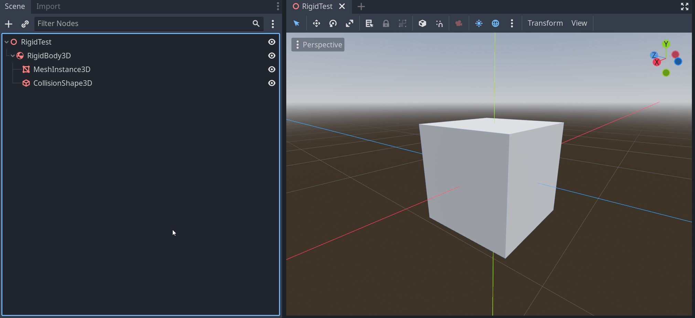
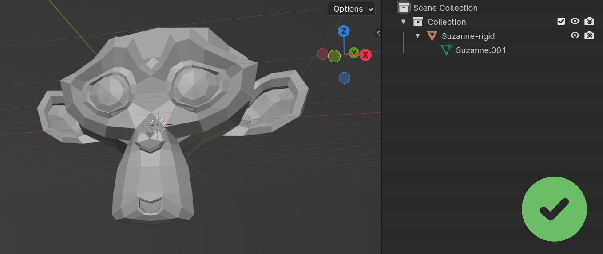
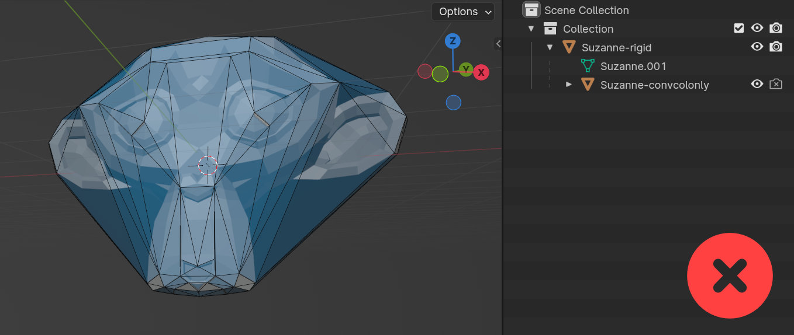
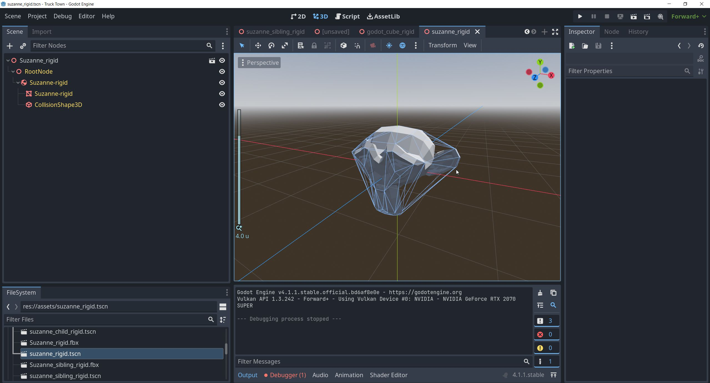

Overview
This guide provides instructions on setting up assets in Blender and importing them into Godot for collision purposes. It covers the usage of Convex and Mesh collider types, which are supported by the Collider Tools addon.
Documentation References
Supported Collider Types
The only collider types that are currently supported by this addon are Convex and Mesh. They can easily be generated with the addon and imported into the game engine.
Godot uses object suffixes, known as Import Hints, to specify different properties per object on import. These hints tell Godot the intended use of an object as a collider.
- -colonly: Imports the object as a Mesh Collider
- -convcolonly: Imports the object as a Convex Collider
- -col: Imports the object as both a visual mesh and a mesh collider.
- -convcol: Imports the object as both a visual mesh and a convex collider.
Setup in Blender
- Name the Assets Correctly: Ensure assets in Blender are named using the corresponding suffixes, specified above.
- Export with Collisions: Export the asset from Blender with the colliders.
- Import into Godot: Import the exported asset into Godot.
I recommend separating visual mesh and collision. This allows for more optimized collision meshes
Following image illustrates the setup in Blender for -colonly, -convcolonly. Here we separate between visual mesh and collision. This allows us to optimize the collision and should be the prefered way to go. The suffix will be added automatically when creating colliders with Collider Tools and using the Godot preset.
Alternatively you can also use the visual mesh as collider:
Following image illustrates the setup in Blender for -col, -convcol. These suffix types define that the objects are used both as visual mesh and as collider.
Once imported into Godot, the scene setup should include a visible Mesh with a StaticBody3D component and a CollisionShape3D component. The CollisionShape3D will be set to either concave or convex, depending on the suffix used.
Primitive Collider Shapes
Warning
The import instructions from the Godot documentation did not work for me. I was not able to import primitive types from Blender. Empties are always imported as Node3D instead of the CollisionShape. Setting up primitive collider types in Godot requires a specific approach. This process is not supported by the Collider Tool addon and must be done manually.
Supported primitive shapes in Godot include:
Simulated Objects
Simulated objects are object affected by the 3D physics simulation. They can be moved by forces like gravity and be pushed around.
This is the required hierarchy for simulated objects to work in Godot:
- Rigidbody parent
- Visual Mesh
- Collider
- (optional) additional Colliders

Visual mesh and colliders need to be direct children of the Rigid Body. I can have an arbitrary number of colliders directly parented to the Rigid body.
Setup in Blender
- Apply -rigid directly to the visual mesh of the object. This assigns a Rigid Body component in Godot and a CollisionShape3D.
- Do not add additional suffixes! Avoid -col, -convcol, -colonly, and -convcolonly: These add a StaticBody3D and conflict with -rigid.
- Avoid additional Colliders: Do not attach extra colliders to the object with -rigid. As they will also add StaticBody3D components in Godot.

This setup will create a rigid body with a visual mesh and a mesh collider in Godot.

Custom Colliders can not be imported with a rigid body currently.
In Godot
- Default Type: The default is a Concave Collider, not ideal for simulated meshes.
- Manual Adjustment: Change the collider type to Convex manually, or add a different primitive collider.

Physics Materials
Physics Materials hold physics-related properties of a surface, in the case of Godot its primarily roughness and bounciness. Godot supports per-shape physics material assignment.
Physics Materials can be assigned to the individual CollisionShape object.
Warning
The Godot default importer does not support the automated import of physics materials.
Other Shapes
Godot also offers specialized collision shapes for specific use cases. These include: The SeparationRay type can be imported in a similar way to the primitive collider types.
These shapes should be considered for more advanced and specific collision requirements.